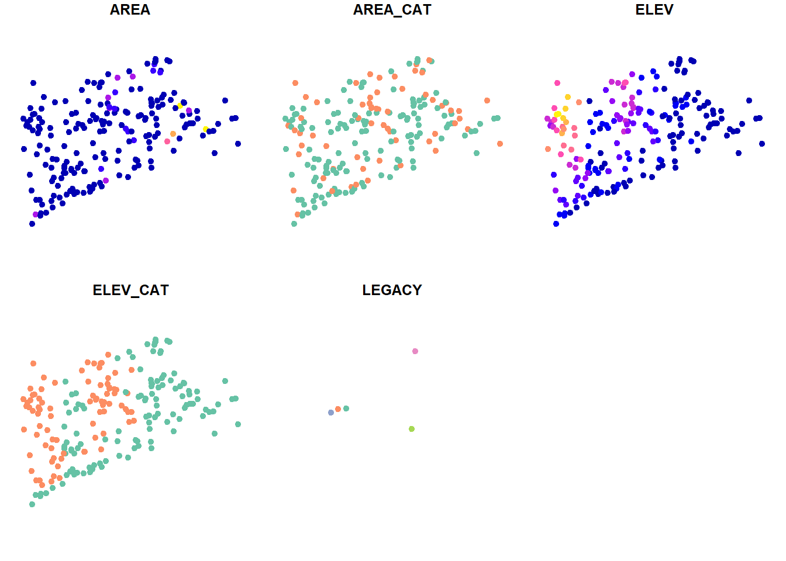
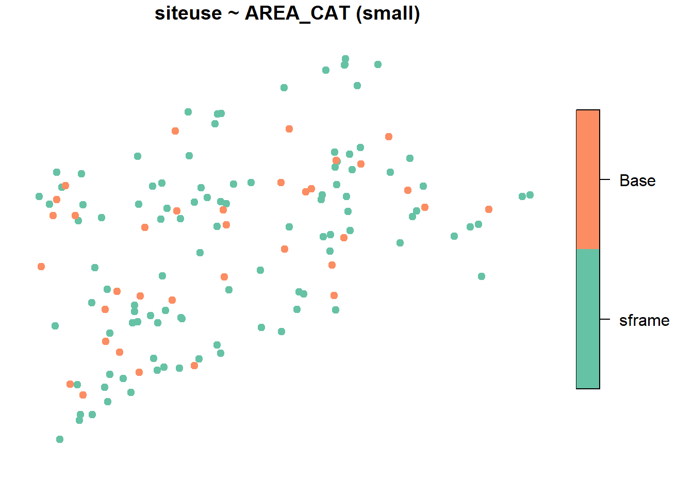

1 Designing a Survey
Define the Target Population In designing an aquatic resource monitoring survey, the designer must define what aquatic resource is to be monitored, otherwise known as the Target Population. For example, if the designer only has an interest in assessing the condition of perennial waters in a state, the target population is defined as perennial waters and intermittent and ephemeral waters are defined as non-target populations and are omitted from the selection process. The target population should align with your organizations monitoring strategy and objectives.
Select a Sample Frame of the Target Population Next, the designer must select a Sample Frame to use when selecting potential sampling sites. A sample frame is a GIS representation (e.g. shapefile) of the aquatic resource target population such as National Hydrography Datasets. In the example above, the designer will select a dataset which only includes perennial waters. This process often involves extracting a subset of a dataset which contains non-target resources.
Sample frames for NARS and states may differ due to different target populations, source material, and state knowledge leading to improvements. For partners to leverage NARS fully, requesting the integration of a partners sample frame can possibly be accommodated.
Once the target population has been defined and a sample frame of the target population has been selected, the designer can now prepare survey. The code below shows how a survey was designed using a population of lakes in the Northeast US. This sample frame is found in the package spsurvey and is not meant for use other than as an example.
NOTE To upload your own sample frame, you may use the code below to read a file as an sf_object which is required by spsurvey to design a survey.
library(sf)
#Example to read a shapefile
my_sample_frame <- st_read("path to my sample frame.shp")#Load the spsurvey package
library(spsurvey)
#To view the NE_Lakes sf object which contains the target population
NE_Lakes <- spsurvey::NE_Lakes
#Plot NE_Lakes
plot(NE_Lakes,
pch = 19,
main= "NE Lakes",
key.width = lcm(3))
For a state scale monitoring survey, it is generally accepted that sampling 50 sites gives sufficient confidence when calculating condition estimates. This sample size can vary depending on the size of the sample frame. Below we prepare an unstratified equal probability survey in which all lakes in the sample frame have the same chance of being selected regardless of size or other attributes.
EQ_PROB <- grts(
NE_Lakes,
n_base = 50
)
plot(
EQ_PROB,
NE_Lakes,
main= "Base Sample Sites",
pch = 19,
key.width = lcm(3)
)
Above, the plot displays the survey sites selected within the sample frame. Use the function spsurvey::sprbind() to obtain the information about each survey site.
#Binds survey site
EQ_PROB_INFO <- sprbind(EQ_PROB)
#View the first 5 rows
head(EQ_PROB_INFO, 5)## Simple feature collection with 5 features and 14 fields
## Geometry type: POINT
## Dimension: XY
## Bounding box: xmin: 1842226 ymin: 2305864 xmax: 2124136 ymax: 2374848
## Projected CRS: NAD83 / Conus Albers
## siteID siteuse replsite lon_WGS84 lat_WGS84 stratum wgt ip caty AREA
## 1 Site-01 Base None -69.96715 41.69618 None 4 0.25 None 5.499884
## 2 Site-02 Base None -71.68577 41.75769 None 4 0.25 None 70.520516
## 3 Site-03 Base None -73.31835 42.22854 None 4 0.25 None 3.550885
## 4 Site-04 Base None -73.19849 41.73313 None 4 0.25 None 6.299730
## 5 Site-05 Base None -70.68794 41.89119 None 4 0.25 None 7.698516
## AREA_CAT ELEV ELEV_CAT LEGACY geometry
## 1 small 1.19 low <NA> POINT (2124136 2369690)
## 2 large 139.09 high <NA> POINT (1985350 2339174)
## 3 small 256.15 high <NA> POINT (1842226 2357367)
## 4 small 272.75 high <NA> POINT (1864944 2305864)
## 5 small 27.75 low <NA> POINT (2060998 2374848)#Creates an sframe object of northeast lakes found in the spsurvey package
NE_Lakes <- sframe(NE_Lakes)
#Plot NE_Lakes stratified by Area Category
plot(NE_Lakes,
formula = ~ AREA_CAT,
main= "NE Lakes by Area Category",
pch = 19,
key.width = lcm(3))
#Summarize NE_lakes by Area Category
summary <- summary(NE_Lakes, formula = ~ AREA_CAT)
propprob <- grts(
NE_Lakes,
n_base = 50,
seltype = "proportional",
aux_var = "AREA"
)
plot(
propprob,
formula = siteuse ~ AREA_CAT,
NE_Lakes,
pch = 19,
key.width = lcm(3)
)
10 acres
#Create a vector defining stratified sample size
strata_n <- c(small = 35, large = 15)
#Select a stratified GRTS sample
STRAT_PROB <- grts(
NE_Lakes,
n_base = strata_n,
stratum_var = "AREA_CAT"
)
plot(
STRAT_PROB,
formula = siteuse ~ AREA_CAT,
NE_Lakes,
pch = 19,
key.width = lcm(3)
)